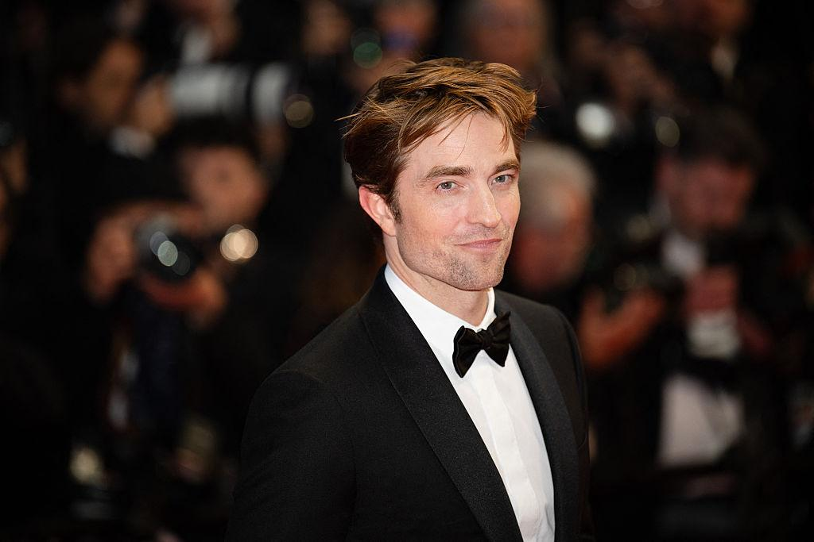

Quem é Robert Pattinson?
Robert Pattinson é um ator britânico reconhecido mundialmente por sua versatilidade, carisma e capacidade de interpretar personagens complexos. Nascido em 13 de maio de 1986, em Londres, na Inglaterra, ele conquistou o público ao longo de sua carreira, passando de fenômeno adolescente a um dos nomes mais interessantes do cinema contemporâneo.
Sua trajetória começou a ganhar destaque com Harry Potter e o Cálice de Fogo, mas foi com a saga Crepúsculo, na qual interpretou Edward Cullen, que alcançou fama internacional. Com o passar dos anos, Robert demonstrou que seu talento vai muito além dos grandes sucessos comerciais, participando de produções independentes e filmes aclamados pela crítica.
Conhecido por sua dedicação aos personagens e por suas escolhas artísticas ousadas, Pattinson construiu uma carreira marcada pela transformação. De um vampiro romântico a um super-herói sombrio, o ator continua surpreendendo o público e consolidando seu espaço em Hollywood.
Carreira
A carreira de Robert Pattinson é marcada por mudanças, desafios e uma busca constante por novos caminhos artísticos. Antes de se tornar um dos atores mais conhecidos de sua geração, ele iniciou sua trajetória em produções britânicas, conquistando seus primeiros papéis no cinema ainda jovem.
Em 2005, interpretou Cedrico Diggory em Harry Potter e o Cálice de Fogo, ganhando visibilidade internacional. Poucos anos depois, assumiu o papel de Edward Cullen na saga Crepúsculo, que transformou sua vida e o tornou um ídolo mundial.
Após o enorme sucesso comercial, Robert decidiu explorar personagens mais desafiadores em filmes como Cosmópolis, Bom Comportamento (Good Time) e O Farol. Essas produções evidenciaram sua disposição para experimentar gêneros diferentes e interpretar figuras psicológicas complexas.
Mais tarde, participou de grandes produções, como Tenet e The Batman, mostrando que consegue transitar entre o cinema autoral e os blockbusters. Sua carreira continua evoluindo, com projetos que reforçam sua reputação como um ator versátil e imprevisível.
Prêmios
Ao longo de sua trajetória, Robert Pattinson recebeu reconhecimento por seu trabalho em diferentes gêneros cinematográficos. Embora tenha alcançado fama mundial com produções voltadas ao grande público, foi também por meio de filmes independentes e atuações intensas que conquistou espaço entre críticos e profissionais da indústria.
Seu desempenho em obras como Bom Comportamento e O Farol ajudou a fortalecer sua imagem como um ator disposto a assumir riscos e explorar personagens complexos. Já suas participações em grandes franquias ampliaram ainda mais sua opularidade e seu alcance internacional.
Além de indicações e reconhecimentos ligados à atuação, Robert também recebeu prêmios populares, que refletem sua influência cultural e a conexão com seus fãs. Sua trajetória demonstra que o sucesso de um ator não se resume à quantidade de troféus, mas também à capacidade de construir personagens emoráveis e deixar sua marca no cinema.
- MTV Movie Awards: recebeu prêmios ligados à saga Crepúsculo, incluindo Melhor Beijo.
- Hollywood Film Awards: recebeu o prêmio New Hollywood em 2008.
- Strasbourg International Film Festival: venceu na categoria de Melhor Ator por How to Be.
- London Critics’ Circle Film Awards: foi reconhecido como Ator Britânico/Irlandês do Ano em 2020.
- Fangoria Chainsaw Awards: venceu como Melhor Ator por O Farol em 2020.
